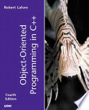
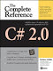
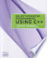

| FuObject Oriented Programming with C++ | ||
|---|---|---|
| Author: | E. Balagurusamy |  |
| Publisher: | TMH | |
| Edition: | 4th Edition | |
| E-Book: | Download E-Book | |
| The Complete Reference C++ | ||
|---|---|---|
| Author: | Herbert Schildt |  |
| Publisher: | Pearson Education | |
| Edition: | 5th Edition | |
| E-Book: | Download E-Book | |
| Object Oriented Programming Using C++ | ||
|---|---|---|
| Author: | Ira Pohl |  |
| Publisher: | Pearson Education | |
| E-Book: | Download E-Book | |